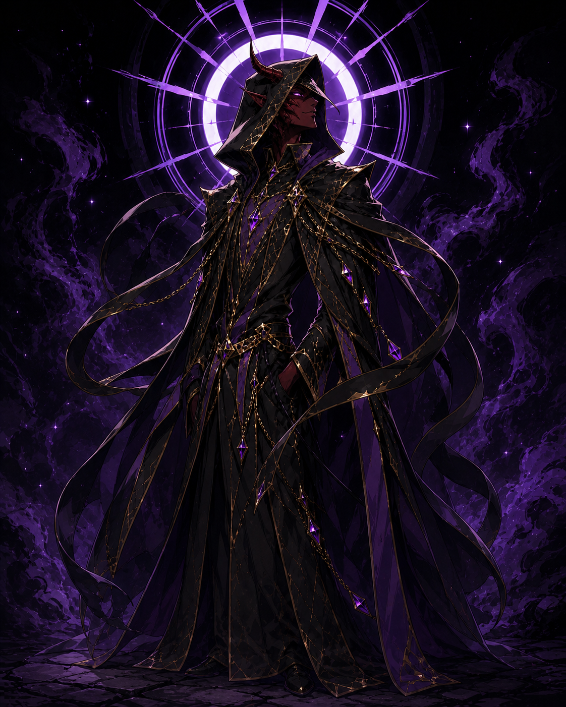

Registro principal
Base

Nytherael-Zorvorythas
Conhecido como Príncipe da Noite, Nytherael-Zorvorythas governa os domínios da enganação, da mentira e dos disfarces. De alinhamento caótico e mal, sua presença se move onde a luz falha, onde a verdade se curva e onde cada rosto pode esconder uma segunda intenção mais afiada que qualquer lâmina.
Seu símbolo é a Máscara de Duas Faces, representação sagrada da ilusão, da duplicidade e das verdades partidas ao meio. Reverenciado como Clérigo Supremo da Enganação, Nytherael-Zorvorythas é mestre das sombras e das mentiras, deus da ilusão e do engodo, guiando aqueles que vencem sem revelar o próprio jogo.
Sua arma sagrada é a Falsa Lâmina, uma espada forjada nas mentiras tecidas pelo próprio Nytherael-Zorvorythas. Ela corta não a carne, mas a verdade, abrindo feridas na certeza, desfazendo identidades e transformando ilusão, engano e aniquilação em uma única sentença silenciosa.